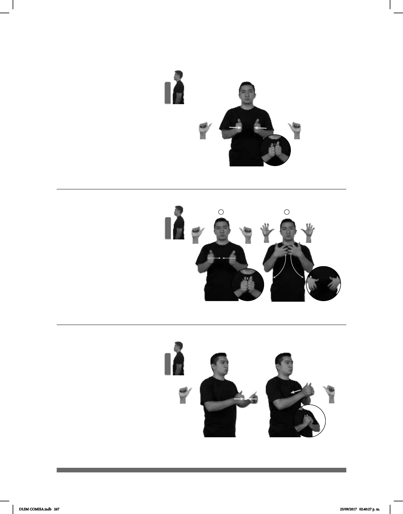

267
Con (A-103)
ARROZ CON HUEVO pro-YO QUERER COMER
Quiero comer arroz con huevo.
1 2
(A-104)
dm-JAVIER
derecha
pos-MI CONCUÑO
Javier es mi concuño.
(A-105)
_____________o.i.g.
CONMIGO CASAR
¿Te casarías conmigo?
Seña: SS
A.1
Las palmas se
encuentran frente a frente.
A la altura del pecho.
Las manos se
encuentran y se tocan frente a
frente.
prep. Indica una
relación de compañía, colaboración,
reciprocidad, o simple presencia de
varias personas o cosas al mismo
tiempo o juntas.
Seña: SC: I. y II. SS
I. A.1; II. 5.5
I. Las palmas se
encuentran frente a frente; II. Palmas
hacia dentro.
I. y II. A la altura del
pecho.
I. Las manos se
encuentran y se tocan frente a frente; II.
Las manos parten de un mismo punto y
luego se abren hacia abajo y hacia los
lados.
sust. m. Respecto de una
persona, el cuñado de su esposo o
esposa.
Seña: SC: I. y II. SS
I. y II. A.1
I. y II. Las palmas se
encuentran frente a frente.
I. y II. A la altura del
pecho.
I. Las manos se
encuentran y se tocan frente a
frente; II. Las manos parten de un
mismo punto y luego se abren
hacia el pecho.
pron. Con la persona
que habla o escribe.
DLSM COMISA.indb 267 25/09/2017 02:40:27 p. m.